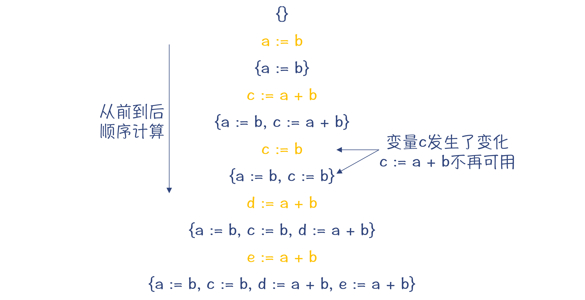
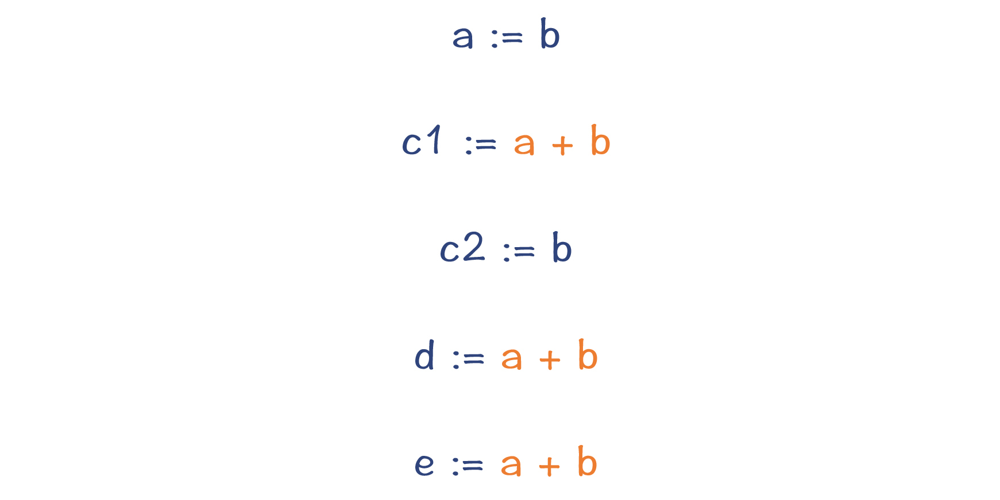
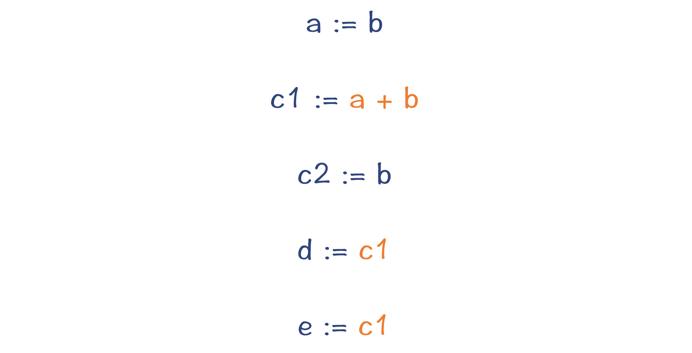
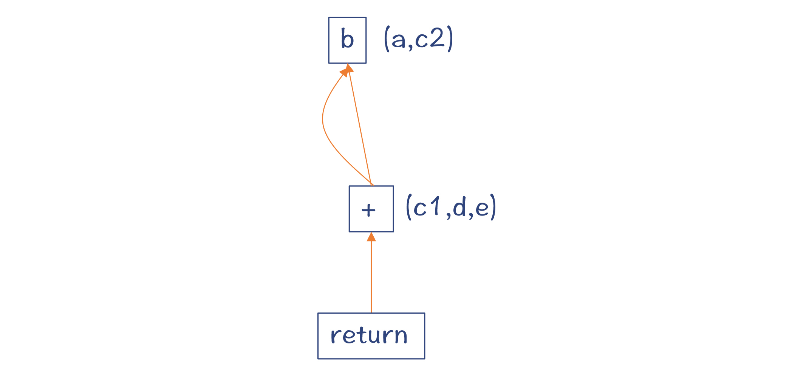
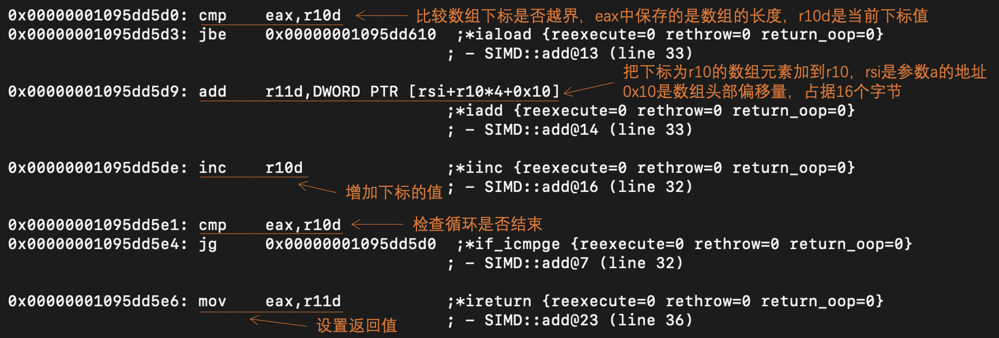
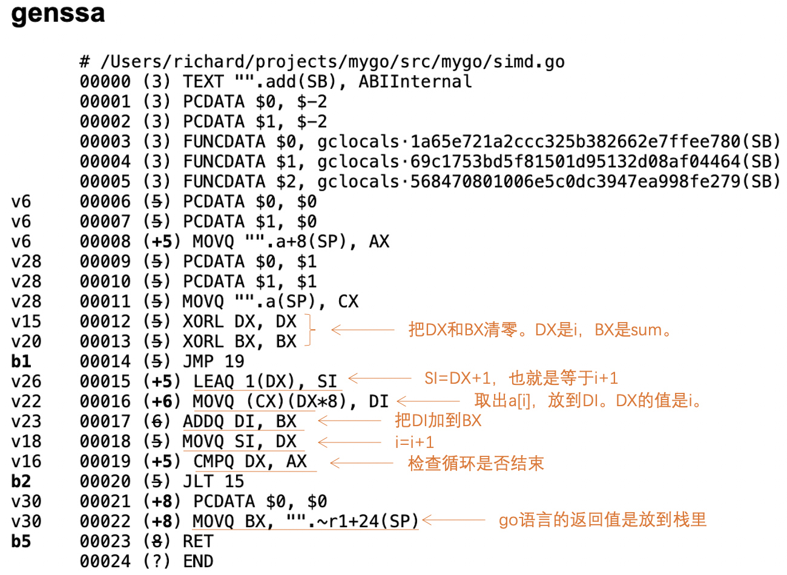
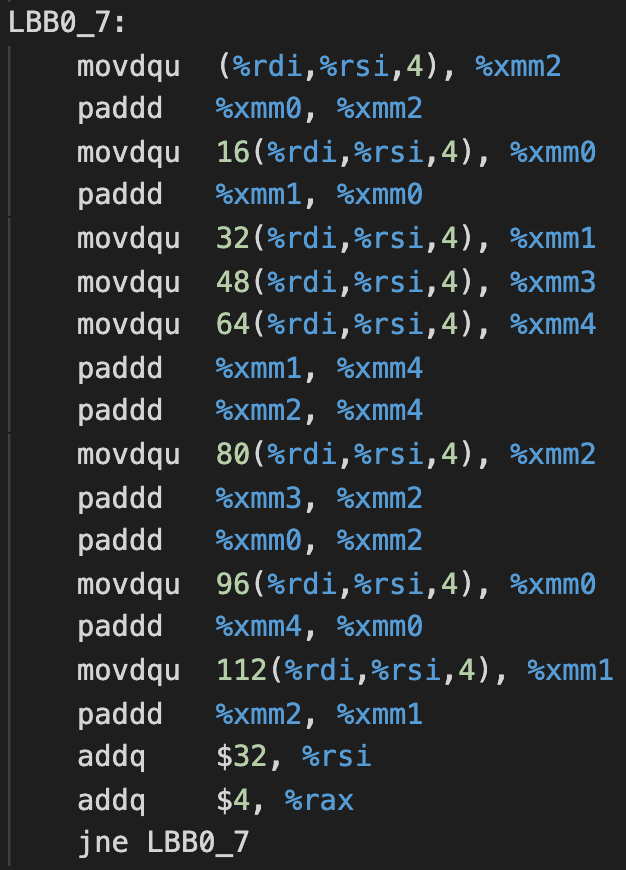
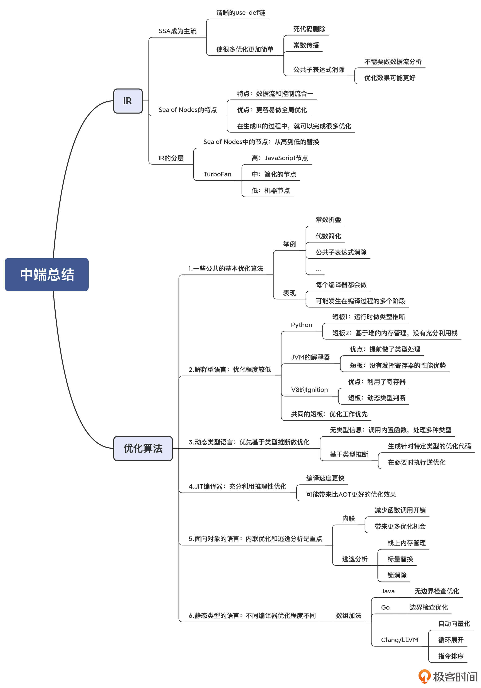

- 00 学习指南 如何学习这门编译原理实战课？.md.html
- 00 开篇词 在真实世界的编译器中游历.md.html
- 01 编译的全过程都悄悄做了哪些事情？.md.html
- 02 词法分析：用两种方式构造有限自动机.md.html
- 03 语法分析：两个基本功和两种算法思路.md.html
- 04 语义分析：让程序符合语义规则.md.html
- 05 运行时机制：程序如何运行，你有发言权.md.html
- 06 中间代码：不是只有一副面孔.md.html
- 07 代码优化：跟编译器做朋友，让你的代码飞起来.md.html
- 08 代码生成：如何实现机器相关的优化？.md.html
- 09 Java编译器（一）：手写的编译器有什么优势？.md.html
- 10 Java编译器（二）：语法分析之后，还要做些什么？.md.html
- 11 Java编译器（三）：属性分析和数据流分析.md.html
- 12 Java编译器（四）：去除语法糖和生成字节码.md.html
- 13 Java JIT编译器（一）：动手修改Graal编译器.md.html
- 14 Java JIT编译器（二）：Sea of Nodes为何如此强大？.md.html
- 15 Java JIT编译器（三）：探究内联和逃逸分析的算法原理.md.html
- 16 Java JIT编译器（四）：Graal的后端是如何工作的？.md.html
- 17 Python编译器（一）：如何用工具生成编译器？.md.html
- 18 Python编译器（二）：从AST到字节码.md.html
- 19 Python编译器（三）：运行时机制.md.html
- 20 JavaScript编译器（一）：V8的解析和编译过程.md.html
- 21 JavaScript编译器（二）：V8的解释器和优化编译器.md.html
- 22 Julia编译器（一）：如何让动态语言性能很高？.md.html
- 23 Julia编译器（二）：如何利用LLVM的优化和后端功能？.md.html
- 24 Go语言编译器：把它当作教科书吧.md.html
- 25 MySQL编译器（一）：解析一条SQL语句的执行过程.md.html
- 26 MySQL编译器（二）：编译技术如何帮你提升数据库性能？.md.html
- 27 课前导读：学习现代语言设计的正确姿势.md.html
- 28 前端总结：语言设计也有人机工程学.md.html
- 29 中端总结：不遗余力地进行代码优化.md.html
- 30 后端总结：充分发挥硬件的能力.md.html
- 31 运行时（一）：从0到语言级的虚拟化.md.html
- 32 运行时（二）：垃圾收集与语言的特性有关吗？.md.html
- 33 并发中的编译技术（一）：如何从语言层面支持线程？.md.html
- 34 并发中的编译技术（二）：如何从语言层面支持协程？.md.html
- 35 并发中的编译技术（三）：Erlang语言厉害在哪里？.md.html
- 36 高级特性（一）：揭秘元编程的实现机制.md.html
- 37 高级特性（二）：揭秘泛型编程的实现机制.md.html
- 38 综合实现（一）：如何实现面向对象编程？.md.html
- 39 综合实现（二）：如何实现函数式编程？.md.html
- 40 成果检验：方舟编译器的优势在哪里？.md.html
- 不定期加餐1 远程办公，需要你我具备什么样的素质？.md.html
- 不定期加餐2 学习技术的过程，其实是训练心理素质的过程.md.html
- 不定期加餐3 这几年，打动我的两本好书.md.html
- 不定期加餐4 从身边的牛人身上，我学到的一些优秀品质.md.html
- 不定期加餐5 借助实例，探究C++编译器的内部机制.md.html
- 划重点 7种编译器的核心概念与算法.md.html
- 期末答疑与总结 再次审视学习编译原理的作用.md.html
- 热点问题答疑 如何吃透7种真实的编译器？.md.html
- 用户故事 易昊：程序员不止有Bug和加班，还有诗和远方.md.html
- 知识地图 一起来复习编译技术核心概念与算法.md.html
- 结束语 实战是唯一标准！.md.html
- 捐赠
29 中端总结：不遗余力地进行代码优化
你好，我是宫文学。
今天这一讲，我继续带你来总结前面解析的7种真实的编译器中，中端部分的特征和编译技术。
在课程的第1讲，我也给你总结过编译器的中端的主要作用，就是实现各种优化。并且在中端实现的优化，基本上都是机器无关的。而优化是在IR上进行的。
所以，今天这一讲，我们主要来总结以下这两方面的问题：
- 第一，是对IR的总结。我在第6讲中曾经讲过，IR分为HIR、MIR和LIR三个层次，可以采用线性结构、图、树等多种数据结构。那么基于我们对实际编译器的研究，再一起来总结一下它们的IR的特点。
- 第二，是对优化算法的总结。在第7讲，我们把各种优化算法做了一个总体的梳理。现在就是时候，来总结一下编译器中的实际实现了。
通过今天的总结，你能够对中端的两大主题IR和优化，形成更加深入的理解，从而更有利于你熟练运用编译技术。
好了，我们先来把前面学到的IR的相关知识，来系统地梳理和印证一下吧。
对IR的总结
通过对前面几个真实编译器的分析，我们会发现IR方面的几个重要特征：SSA已经成为主流；Sea of Nodes展现出令人瞩目的优势；另外，一个编译器中的IR，既要能表示抽象度比较高的操作，也要能表示抽象度比较低的、接近机器码的操作。
SSA成为主流
通过学习前面的课程，我们会发现，符合SSA格式的IR成为了主流。Java和JavaScript的Sea of Nodes，是符合SSA的；Golang是符合SSA的；Julia自己的IR，虽然最早不是SSA格式的，但后来也改成了SSA；而Julia所采用的LLVM工具，其IR也是SSA格式的。
SSA意味着什么呢？源代码中的一个变量，会变成多个版本，每次赋值都形成一个新版本。在SSA中，它们都叫做一个值（Value），对变量的赋值就是对值的定义（def）。这个值定义出来之后，就可以在定义其他值的时候被使用（use），因此就形成了清晰的“使用-定义”链（use-def）。
这种清晰的use-def链会给优化算法提供很多的便利：
- 如果一个值定义了，但没有被使用，那就可以做死代码删除。
- 如果对某个值实现了常数折叠，那么顺着def-use链，我们就可以马上把该值替换成常数，从而实现常数传播。
- 如果两个值的定义是一样的，那么这两个值也一定是一样的，因此就可以去掉一个，从而实现公共子表达式消除；而如果不采取SSA，实现CSE（公共子表达式消除）需要做一个数据流分析，来确定表达式的变量值并没有发生变化。
针对最后一种情况，也就是公共子表达式消除，我再给你展开讲解一下，让你充分体会SSA和传统IR的区别。
我们知道，基于传统的IR，要做公共子表达式消除，就需要专门做一个“可用表达式”的分析。像下图展示的那样，每扫描一遍代码，就要往一个集合里增加一个可用的表达式。
为什么叫做可用表达式呢？因为变量可能被二次赋值，就像图中的变量c那样。在二次赋值以后，之前的表达式“c:=a+b”就不可用了。

图1：变量c二次赋值后，各个位置的可用表达式集合
在后面，当替换公共子表达式的时候，我们可以把“e:=a+b”替换成“e:=d”，这样就可以少做一次计算，实现了优化的目标。
而如果采用SSA格式，上面这几行语句就可以改写为下图中的样子：

图2：用SSA格式的IR改写的程序
可以看到，原来的变量c被替换成了c1和c2两个变量，而c1、d和e右边的表达式都是一样的，并且它们的值不会再发生变化。所以，我们可以马上消除掉这些公共子表达式，从而减少了两次计算，这就比采用SSA之前的优化效果更好了。最重要的是，整个过程根本不需要做数据流分析。

图3：把公共子表达式a+b消除掉
好，在掌握了SSA格式的特点以后，我们还可以注意到，Java和JavaScript的两大编译器，在做优化时，竟然都不约而同地用到了Sea Of Nodes这种数据结构。它看起来非常重要，所以，我们再接着来总结一下，符合SSA格式的Sea of Nodes，都有什么特点。
Sea of Nodes的特点总结
其实在解析Graal编译器的时候，我就提到过，Sea of Nodes的特点是把数据流图和控制流图合二为一，从而更容易实现全局优化。因为采用这种IR，代码并没有一开始就被限制在一个个的基本块中。直到最后生成LIR的环节，才会把图节点Schedule到各个基本块。作为对比，采用基于CFG的IR，优化算法需要让代码在基本块内部和基本块之间移动，处理起来会比较复杂。
在这里，我再带你把生成IR的过程推导一遍，你能从中体会到生成Sea of Nodes的思路，并且还会有一些惊喜的发现。
示例函数或方法是下面这样：
int foo(int b){
a = b;
c = a + b;
c = b;
d = a + b;
e = a + b;
return e;
}
那么，为它生成IR图的过程是怎么样的呢？
第1步，对参数b生成一个节点。
第2步，对于a=b，这里并没有形成一个新的值，所以在后面在引用a和b的时候，都指向同一个节点就好。
第3步，对于c=a+b，生成一个加法节点，从而形成一个新的值。
第4步，对于c=b，实际上还是直接用b这个节点就行了，并不需要生成新节点。
第5步和第6步，对于d=a+b和e=a+b，你会发现它们都没有生成新的值，还是跟c1用同一个节点表示就行。
第7步，对于return语句，这时候生成一个return节点，返回上面形成的加法节点即可。

从这个例子中你发现了什么呢？原来，采用Sea of Nodes作为IR，在生成图的过程中，顺带就可以完成很多优化了，比如可以消除公共子表达式。
所以我希望，通过上面的例子，你能进一步抓住Sea of Nodes这种数据结构的特点。
但是，Sea of Nodes只有优点，没有缺点吗？也不是的。比如：
- 你在检查生成的IR、阅读生成的代码的时候，都会更加困难。因为产生的节点非常多，会让你头晕眼花。所以，这些编译器都会特别开发一个图形化的工具，来帮助我们更容易看清楚IR图的脉络。
- 对图的访问，代价往往比较大。当然这也可以理解。因为你已经知道，对树的遍历是比较简单的，但对图的遍历算法就要复杂一些。
- 还有，当涉及效果流的时候，也就是存在内存读写等操作的时候，我们对控制流做修改会比较困难，因为内存访问的顺序不能被打乱，除非通过优化算法把固定节点转换成浮动节点。
总体来说，Sea of Nodes的优点和缺点都来自图这种数据结构。一方面，图的结构简化了程序的表达；另一方面，要想对图做某些操作，也会更困难一些。
从高到低的多层次IR
对于IR来说，我们需要总结的另一个特点，就是编译器需要从高到低的多个层次的IR。在编译的过程中，高层次的IR会被不断地Lower到低层次的IR，直到最后翻译成目标代码。通过这样层层Lower的过程，程序的语义就从高级语言，一步步变到了汇编语言，中间跨越了巨大的鸿沟：
- 高级语言中对一个数组元素的访问，到汇编语言会翻译成对内存地址的计算和内存访问；
- 高级语言中访问一个对象的成员变量，到汇编语言会以对象的起始地址为基础，计算成员变量相对于起始地址的偏移量，中间要计算对象头的内存开销；
- 高级语言中对于本地变量的访问，到汇编语言要转变成对寄存器或栈上内存的访问。
在采用Sea of Nodes数据结构的时候，编译器会把图中的节点，从代表高层次语义的节点，逐步替换到代表低层次语义的节点。
以TurboFan为例，它的IR就包含了几种不同层次的节点：
- 抽象度最高的，是复杂的JavaScript节点；
- 抽象度最低的，是机器节点；
- 在两者之间的，是简化的节点。
伴随着编译的进程，我们有时还要进行IR的转换。比如GraalVM，会从HIR转换到LIR；而Julia的编译器则从自己的IR，转换成LLVM的IR；另外，在LLVM的处理过程中，其IR的内部数据结构也进行了切换。一开始使用的是便于做机器无关的优化的结构，之后转换成适合生成机器码的结构。
好，总结完了IR，我们再来看看编译器对IR的处理，比如各种分析和优化算法。
对优化算法的总结
编译器基于IR，主要做了三种类型的处理。第一种处理，就是我们前面说的层层地做Lower。第二种处理，就是对IR做分析，比如数据流分析。第三种处理，就是实现各种优化算法。编译器的优化往往是以分析为基础。比如，活跃性分析是死代码消除的基础。
前面我也说过，编译器在中端所做的优化，基本上都是机器无关的优化。那么在考察了7种编译器以后，我们来总结一下这些编译器做优化的特点。
第一，有些基本的优化，是每个编译器都会去实现的。
比如说，我们见过的常数折叠、代数简化、公共子表达式消除等。这些优化还可能发生在多个阶段，比如从比较早期的语义分析阶段，到比较晚期的基于目标代码的窥孔优化，都使用了这些优化算法。
第二，对于解释执行的语言，其编译器能做的优化是有限的。
前面我们见到了代码在JVM的解释器、Python的解释器、V8的解释器中运行的情况，现在我们来总结一下它们的运行时的特点。
Python对代码所做的优化非常有限，在解释器中执行的性能也很低。最重要的原因，是所有的类型检查都是在运行期进行的，并且会根据不同的类型选择执行不同的功能。另外，Python所有的对象都是在堆里申请内存的，没有充分利用栈来做基础数据类型的运算，这也导致了它的性能损耗。
JVM解释执行的性能要高一些，因为Java编译器已经做了类型检查，并针对不同数据类型生成了不同的指令。但它只做了一些简单的优化，一些无用的代码并没有被消除掉，对Java程序性能影响很大的内联优化和逃逸分析也都没有做。它基于栈的运行机制，也没有充分发挥寄存器的硬件能力。
V8的Ignition解释器在利用寄存器方面要比JVM的解释器有优势。不过，它的动态类型拖了后腿，这跟Python是一样的。
第三，对于动态类型的语言，优化编译的首要任务是做类型推断。
以V8的TurboFan为例，它对类型信息做不同的推断的时候，优化效果是不同的。如果你一开始运行程序，就逼着TurboFan马上做编译，那么TurboFan其实并不知道各个变量的类型信息，因此只能生成比较保守的代码，它仍然是在运行时进行类型检查，并执行不同的逻辑。
而一旦通过运行积累了一定的统计数据，TurboFan就可以大胆地做出类型的推断，从而生成针对某种类型的优化代码。不过，它也一定要为自己可能产生的推理错误做好准备，在必要的时候执行逆优化功能。
Julia也是动态类型的语言，但它采取了另一个编译策略。它会为一个函数不同的参数类型组合，编译生成对应的机器码。在运行时，根据不同的函数参数，分派到不同的函数版本上去执行，从而获得高性能。
第四，JIT编译器可以充分利用推理性的优化机制，这样既节省了编译时间，又有可能带来比AOT更好的优化效果。
第五，对于面向对象的语言，内联优化和逃逸分析非常重要。
在分析Graal编译器和V8的TurboFan编译器的过程中，我都特别强调了内联优化和逃逸分析的作用。内联优化不仅能减少对若干短方法调用的开销，还能导致进一步的优化；而逃逸分析能让很多对象在栈上申请内存，并实现标量替换、锁消除等优化，从而获得极大的性能提升。
第六，对于静态类型的语言，不同的编译器的优化程度也是不同的。
很多工程师经常会争论哪个语言的性能更高。不过在学了编译原理之后，其实可以发现这根本不用争论。你可以设计一些示例程序，测试不同的编译器优化后生成的汇编代码，从而自己得出结论。
现在，我用一个示例程序，来带你测试一下Graal、Go和Clang三个编译器处理数组加法的效率，你可以借此了解一下它们各自的优化力度，特别是看看它们有没有自动向量化的支持，并进一步了解不同语言的运行机制。
首先来看看Java，示例代码在SIMD.java中。其中的add方法，是把一个数组的所有值汇总。
private static int add(int a[]){
int sum = 0;
for (int i=0; i<a.length; i++){
sum = sum + a[i];
}
return sum;
}
我们还是用Graal做即时编译，并打印出生成的汇编代码。这里我截取了其中的主要部分，给你做了分析：

分析这段汇编代码，你能得到下面的信息：
- Java中的数组，其头部（在64位环境下）占据16个字节，其中包含了数组长度的信息。
- Java生成的汇编代码，在每次循环开始的时候，都要检查下标是否越界。这是一个挺大的运算开销。其实我们使用的数组下标i，永远不会越界，所以本来可以优化得更好。
- 上述汇编代码并没有使用SIMD指令，没有把循环自动向量化。
我们再来看一下Go语言的优化效果，示例代码在SIMD.go中。
package main
func add(a []int) int {
sum := 0;
for i:=0; i<len(a); i++{
sum = sum + a[i]
}
return sum;
}
我们生成Go语言特有的伪汇编以后，是下面这个样子：

我们拿它跟Graal生成的汇编代码做比较，会发现其中最重要的差别，是Go的编译器消除了下标检查，这是一个挺大的进步，能够提升不少的性能。不过，你也可以测试一下，当代码中的“len(a)”替换成随意的一个整数的时候，Go的编译器会生成什么代码。它仍然会去做下标检查，并在下标越界的时候报错。
不过，令人遗憾的是，Go语言的编译器仍然没有自动生成向量化的代码。
最后，我们来看一下Clang是如何编译同样功能的一个C语言的程序的（SIMD.c）。
int add(int a[], int length){
int sum = 0;
for (int i=0; i<length; i++){
sum = sum + a[i];
}
return sum;
}
编译生成的汇编代码在SIMD.s中。我截取了其中的骨干部分：

你已经知道，Clang是用LLVM做后端的。在它生成的汇编代码中，对循环做了三种优化：
- 自动向量化：用movdqu指令，一次能把4个整数，也就是16个字节、128位数据拷贝到寄存器。用paddd指令，可以一次实现4个整数的加法。
- 循环展开：汇编代码里，在一次循环里执行了8次SIMD的add指令，因为每次相当于做了4个整数的加法，因此每个循环相当于做了源代码中32次循环的工作。
- 指令排序：你能看到，由于一个循环中有很多个指令，所以这就为指令排序提供了机会。另外你还能看到，在这段汇编代码中，集中做了多次的movdqu操作，这可以更好地让指令并行化。
通过这样的对比，你会发现LLVM做的优化是最深入的。所以，如果你要做计算密集型的软件，如果能做到像LLVM这样的优化程度，那就比较理想了。
不过，做比较深入的优化也不是没有代价的，那就是编译时间会更长。而Go语言的编译器，在设计之初，就把编译速度当成了一个重要的目标，因此它没有去实现自动向量化的功能也是可以理解的。
如果你要用Go语言开发软件，又需要做密集的计算，那么你有两个选择。一是用Go语言提供的内置函数（intrincics）去实现计算功能，这些内置函数是直接用汇编语言实现的。二是Go语言也提供了一个基于LLVM的编译器，你可以用这个编译器来获得更好的优化效果。
课程小结
这一讲，我带你全面系统地总结了一下“解析篇”中，各个实际编译器的IR和优化算法。通过这样的总结，你会对如何设计IR、如何做优化，有一个更加清晰的认识。
从IR的角度来看，你一定要采用SSA格式的IR，因为它有显著的优点，没有理由不采用。不过，如果你打算自己编写各种优化算法，也不妨进一步采用Sea of Nodes这样的数据结构，并借鉴Graal和V8的一些算法实现。
不过，自己编写优化算法的工作量毕竟很大。在这种情况下，你可以考虑复用一些后端工具，包括LLVM、GraalVM和GCC。
本讲的思维导图我也放在了下面，供你参考：

一课一思
今天我带你测试了Graal、Go和Clang三个编译器，在SIMD方面编译结果的差异。那么，你能否测试一下这几个编译器在其他方面的优化表现？比如循环无关代码外提，或者你比较感兴趣的其他优化。欢迎在留言区分享你的测试心得。
如果你还有其他的问题，欢迎在留言区提问，我会逐一解答。最后，感谢你的阅读，如果今天的内容让你有所收获，也欢迎你把它分享给更多的朋友。
© 2019 - 2023 Liangliang Lee. Powered by gin and hexo-theme-book.